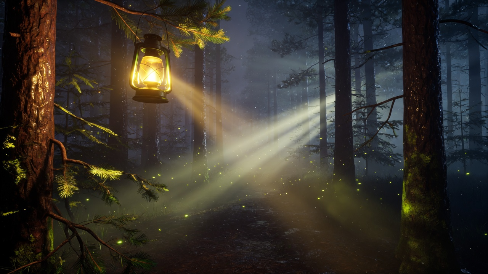
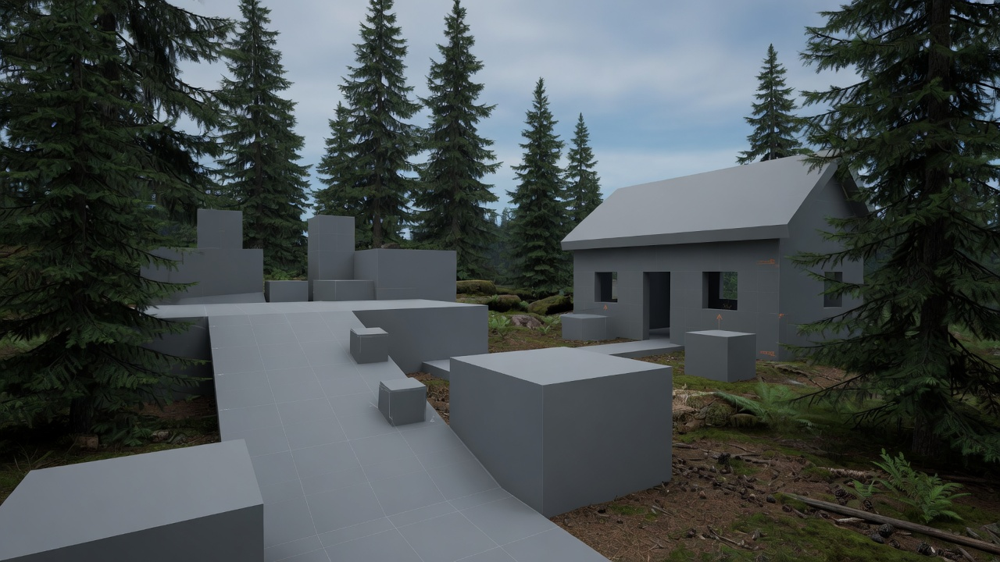
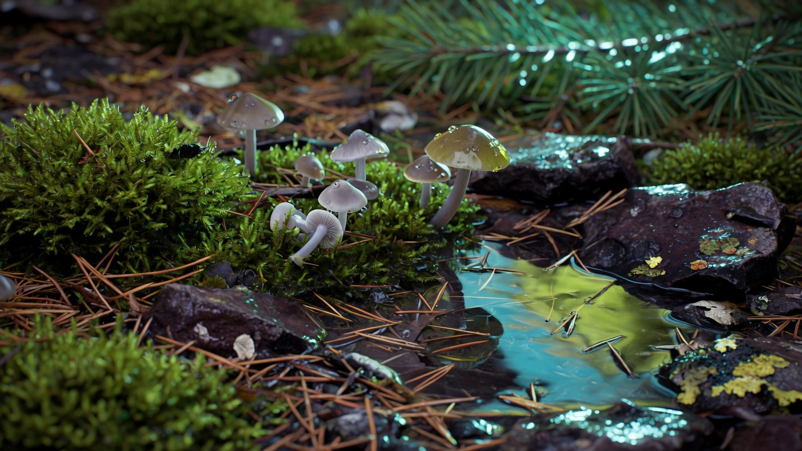
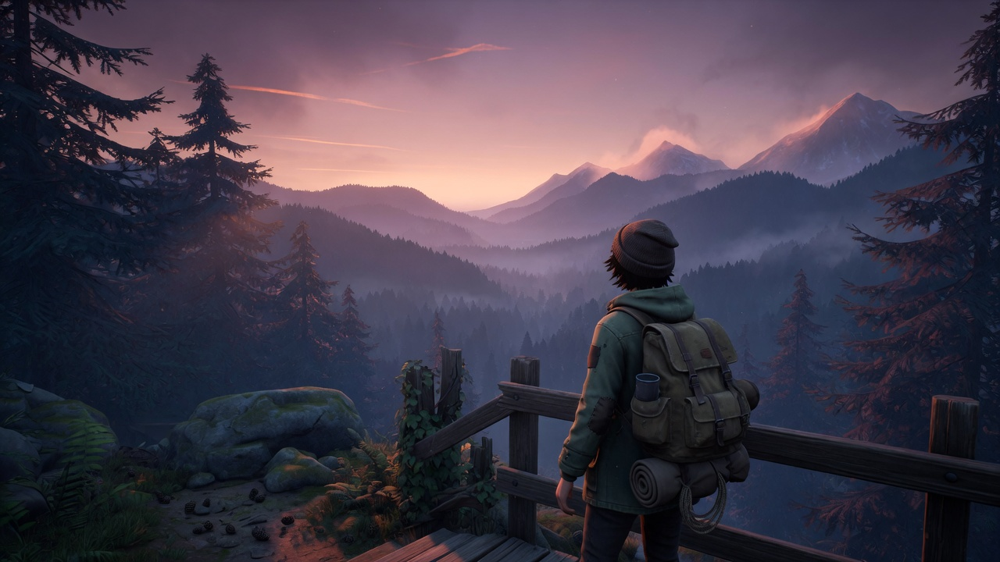

Slovenia, EU
oTTeuM
sTudio
Unreal Engine game dev beginner. I come from 3D modeling and game-ready assets — now I am learning to turn those worlds into playable games.
Currently learning
From meshes to a first playable world
Honest beginner track. I already know topology, UVs, and PBR from Blender. Unreal Engine is the new language I am learning to speak.

Games
Starting a top-down strategy / shooter
Unreal Engine 5.8 and Blueprints. Click-to-move on a graybox, top-down camera — the first session of the next game.
How this game starts
0:45 · 2 Sep 2026 · UE 5.8 · Blueprints · top-down
Recorded in the Unreal Editor on 2 September 2026: Top Down template, mannequin running to a click, then the Enhanced Input actions that make that click an order.
This is the explanation of the start — not a trailer. First Game in Unreal is still on the Games page, with Android and Windows downloads.
Rust
Writing my own 3D modeler
I am writing a polygonal 3D modeler in Rust system-level code — mesh topology, GPU viewport, tools, and undo I own. Not a plugin, and not a script on top of someone else's editor. oTTeCAD is that workbench, compiled to WebAssembly so it runs on this site.
First worlds
Mood studies beside the playable
Lighting, materials, and blockouts I still use to learn Unreal Engine. The top-down strategy/shooter is the new loop; these are the atmosphere notes around it.

Lighting study
One lamp, fog, and wet bark. Mood before mechanics.

Forest blockout
Gray volumes in real pines — scale and path first.

Material close-up
Moss, needles, wet stone — PBR from a 3D art habit.

Third-person look
A traveler on a misty mountain ridge. Camera, silhouette, horizon.
About
oTTeuM sTudio
I am a 3D artist moving into game development. For years I built hard-surface and organic models, clean topology, and game-ready assets. Now I am a beginner in Unreal Engine — learning how those assets live inside a real game.
Background includes Blender, PBR, shaders, and earlier experiments in Godot and Rust. The studio name stays. The work shifts from stills to playable worlds.
- Studio
- oTTeuM sTudio
- Focus
- Unreal Engine beginner
- Location
- Slovenia, EU
Contact
Say hello while I learn in public
Open to conversations, feedback, and small collabs. No form spam — pick a channel.